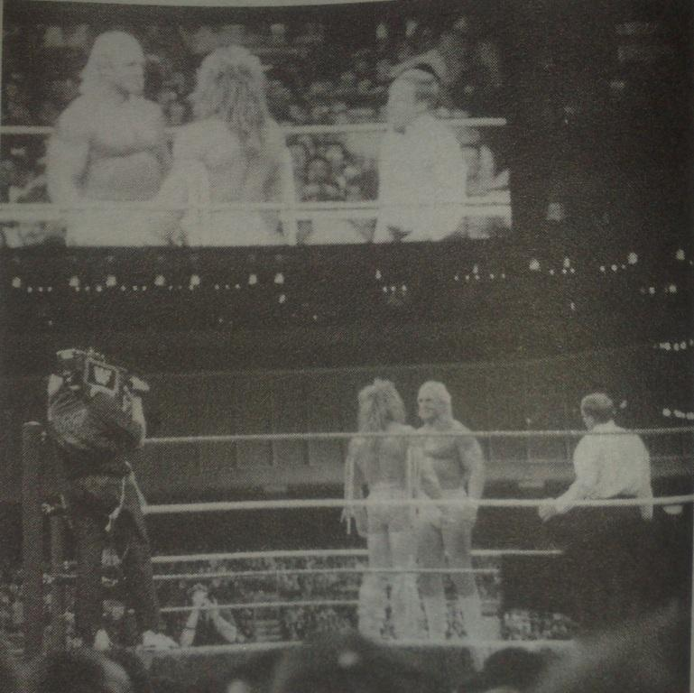

Глава 8
Перевод Тани (Dark Bird) для VSplanet.net
Моя жизнь подготовила несколько приятных сюрпризов. Toronto Star преподнесла первый. Как-то в колонке о рестлинге Норма Дакоста устроили пустяковый конкурс. Призом были два бесплатных билета в первом ряду на следующее шоу WWF в Copps Coliseum в Гамильтоне, Онтарио. Однажды после школы, в то время, когда мы зависали у Джея, раздался телефонный звонок. Постепенно уровень волнения Джея стал расти, пока он не бросил телефон и прыгнул на меня, и я почувствовал на щеке что-то влажное. К тому моменту у меня никогда не было серьезных отношений с девушкой, но в своей ориентации я был твердо уверен, так что я был шокирован. Но оказалось, что звонок был из Toronto Star, и нам сказали, что мы выиграли билеты. Мы были на седьмом небе, так что я тоже поцеловал Джея.
Мы были свидетелями стольких шоу в этом здании на протяжении многих лет. Первый Король Ринга, Флэр против Хогана, Харт против Мартела, Хенниг против Тэйлора, и ещё много всего. Кто мог предвидеть, что, спустя много лет, мой первый матч для WWF пройдет там же.
Мне везло с рестлинг-шоу. Я даже побывал на известном матче Халка Хогана против Пола Орндофа на стадионе CNE в Торонто вместе с 65 тысячами других счастливчиков.
Случился еще один абсолютный, «последний» сюрприз (каламбур). Мама как-то все же наскребла денег и купила два билета в одиннадцатом ряду на WrestleMania VI в Торонто. Это был абсолютно «последний» этаж моих мечтаний, потому что я увижу это абсолютно «Последнее» Противостояние. Халк Хоган против Последнего Воина. А ещё неплохо, что в карде были и Основание Хартов, и Рокеры, и Мистер Перфект. Естественно все они были моими любимцами.

Вид с моего места на WrestleMania VI
Я никогда не был так возбужден, как в тот день в SkyDome. Почти 68 тысяч поклонников разделились на Халкаманьяков и фанатов Воина. Это было классно (хотя Халк и проиграл). Это была моя мечта. Моя мама продолжала видеть это в моих глазах. Во время рестлинг шоу у меня всегда был особенный взгляд. Я думаю, что она уже начала искренне верить, что я мог бы заниматься этим всю мою жизнь. Рестлинг не уходил, мое увлечение порой уменьшалось, но я всё равно был там, вживую или прилипнув к экрану телевизора. Я не могу как следует передать свою страсть к рестлингу, которая до сих пор жива. Не верите? Спросите мою маму.
Все в школе знали, что я фанат рестлинга. В ежегодном школьном альбоме я, вероятно, получил больше всего голосов, как «станет чемпионом WWF» (пророчество, в исполнении которого, я всё ещё нуждаюсь). Медленно, но уверено я начал обретать уверенность в себе. У меня были хорошие друзья (мы до сих пор хорошо общаемся). Мы смотрели рестлинг, слушали музыку и расслаблялись. Не поймите меня неправильно, как и для любого подростка, девушки определенно были приоритетом, однако в этом мне всё ещё не хватало уверенности. Вспоминая себя в то время, я был весьма недурён собой! Однажды я попробовал курить, мне ужасно не понравилось, и с тех пор я не прикасался к сигаретам. Мой первый загул состоялся в 16 лет — да, гордиться особо нечем, реакция моей мамы быстро вывела меня из пьяного состояния.
Она сказала, что разочарована, и это подействовало на меня сильнее, чем любой крик. Я никогда больше не пил, пока не достиг совершеннолетия, да и то позволял себе это крайне изредка. Каждому своё, это просто не для меня.
Теперь я работал после школы, чтобы помочь маме оплачивать счета. Я работал на ипподроме, просиживая в небольшой неотапливаемой каморке, и брал деньги за парковку. Я получал 3,25 доллара в час и мне реально было холодно. В результате я придумал прибыльную схему. Я не выдавал билет каждому десятому автомобилю и прикарманивал два доллара. В Оранджвилле невозможно как следует заработать, поскольку автомобилей было совсем мало.
В конце концов, я скопил достаточно денег, чтобы купить машину. Это был «Меркури Кугуар» 1981-го года. Закончились мои дни походов в школу в минус сорок градусов по Цельсию. Не будет больше походов в спортзал. Дни борьбы с сугробами закончились. Ну или я так думал: страховка автомобиля вернула меня к реальности. Я даже не представлял, сколько это будет стоить. Моя мама не водила, я был молод, тоже без опыта вождения. Я и не представлял, чтобы у меня регулярно водилось по четыре тысячи долларов. Так что я заплатил первый взнос, получил свою наклейку и перестал платить. Я ездил без какой-либо страховки, делал это как можно меньше, но все равно делал. Я бы не советовал так делать, это не стоит стресса, да и трудно ездить со скрещенными пальцами рук и ног.